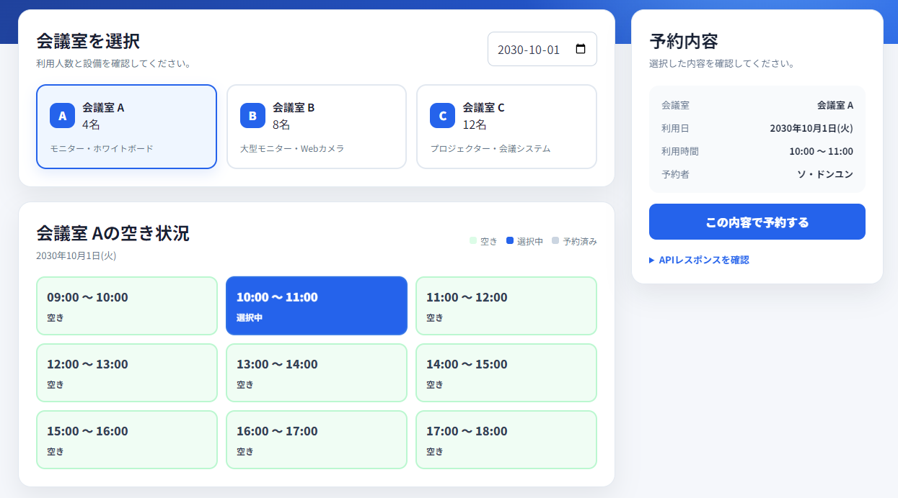
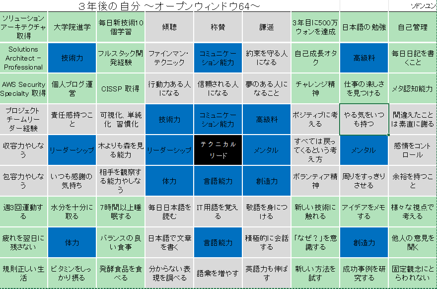

ORIGINAL WORK PRESENTATION
SO DONGYUN / ORIGINAL WORK PRESENTATION
01
オリジナル作品
発表会
学びを、動くシステムへ。
徐東潤 / ソ・ドンユン
配属先：名古屋
RESERVE
HUB
設計から、運用まで。
JAVA / SPRING BOOT / POSTGRESQL
CONTENTS
今日、お伝えしたいこと
「どんな人か」から、「何をつくったか」へ。
SO DONGYUN / ORIGINAL WORK PRESENTATION
02
01
私について
自己紹介・日本に来たきっかけ
02
強みと目標
自己PR・3年後の自分
03
Reserve Hub
作品概要・設計・テスト・運用
04
デモとこれから
予約の流れ・今後の改善
01 / ABOUT ME
経営学から、ITのものづくりへ。
新しい知識を学び、実際に形にすることが好きです。
SO DONGYUN / ORIGINAL WORK PRESENTATION
03
徐東潤
ソ・ドンユン
韓国出身
名古屋配属
好奇心を、行動につなげる。
LEARNING
大学：経営学専攻
AI金融ソフトウェア学科 / Soldesk
EXPERIENCE
Web・モバイルアプリ / 深層学習・機械学習
サーバー環境構築
趣味：旅行・ゲーム・ドラマ・映画・読書・野球
01 / MY JOURNEY
「好き」が、日本で働くという決意に。
文化への関心を、学習と交流で一歩ずつ行動に変えました。
SO DONGYUN / ORIGINAL WORK PRESENTATION
04
01
文化への興味
アニメ・漫画を通じて
日本に興味を持つ
→
02
旅行での実感
何度も日本を訪れ
文化や生活に親しむ
→
03
交流と学習
約1年半の日本語交流
JLPT N2・N1を取得
→
04
日本で働く
日本で生活し
働くことを決意
興味を持つ → 続ける → 行動する。この姿勢を、仕事にも。
02 / MY STRENGTHS
学び続け、仕組みで考え、最後まで動かす。
今回の開発で表れた、私の3つの強み。
SO DONGYUN / ORIGINAL WORK PRESENTATION
05
01
学び続ける
未経験の技術を学び
設計・実装で確かめる。
ヘキサゴナル構成を実践
02
仕組みで考える
「動く」だけでなく
競合時の整合性まで考える。
アプリ＋DBで重複を防止
03
最後まで動かす
テスト・配備・障害分析まで
一連の流れを経験する。
ログを根拠に原因を特定
実装だけで終わらず、動く理由・失敗する理由まで理解する。
02 / CAREER VISION
3年後：周囲から信頼されるテクニカルリードへ。
オープンウインドウ64から、目指す姿と8つの軸を整理。
SO DONGYUN / ORIGINAL WORK PRESENTATION
06
技術力
新技術の学習・AWS資格
コミュニケーション
傾聴・約束を守る
高い成果・収入
仕事の楽しさ・自己成長
リーダーシップ
責任感・全体を見る力
テクニカルリード
信頼される存在へ
メンタル
前向きな思考・感情管理
体力
週3回の運動・睡眠
言語能力
日本語・IT用語・英語
創造力
「なぜ？」・新しい方法
03 / ORIGINAL WORK
SO DONGYUN / ORIGINAL WORK PRESENTATION
07
Reserve Hub
予約に、確かな仕組みを。
会議室などの共有リソースを管理する、予約プラットフォーム。
01
重複を防ぐ
02
変更に備える
03
運用までつなぐ
03 / PROBLEM & APPROACH
予約システムは、「登録できる」だけでは足りない。
この題材を通じて、整合性・変更への対応・運用まで取り組みました。
SO DONGYUN / ORIGINAL WORK PRESENTATION
08
同時に予約されたら？
重複予約のリスク
アプリの事前確認＋DB制約
技術が変わったら？
予約ルールへの影響
ドメインと外部技術を分離
修正を公開するには？
品質確認と配備の手間
テスト・ビルド・配備を自動化
03 / PRODUCT EXPERIENCE
空き時間の確認から予約まで、ひとつの画面で。
会議室を選ぶ → 時間を選ぶ → 内容を確認する。
SO DONGYUN / ORIGINAL WORK PRESENTATION
09

01 空き状況を確認
会議室・日付ごとに表示
02 選択内容を確認
時間帯と予約者を一覧化
03 予約後も管理
再照会・キャンセルに対応
実装画面の表示例（空き状況はサンプルデータ）
03 / CORE DESIGN
重複予約は、アプリとDBの二段階で防ぐ。
事前確認の直後に別のリクエストが入っても、最後はDBが整合性を守ります。
SO DONGYUN / ORIGINAL WORK PRESENTATION
10
同じ会議室 / 同じ時間帯
10:00
11:00
要求 A
10:00 — 11:00
要求 B
同じ時間帯は競合
1
Application
確定済み予約の重なりを事前確認
2
PostgreSQL
排他制約で、同時実行時も最終保護
対象は CONFIRMED のみ。キャンセル後は、同じ時間帯を再予約できます。
03 / ARCHITECTURE
変わりやすい技術と、変えたくない予約ルールを分ける。
ヘキサゴナルアーキテクチャ / Ports & Adapters
SO DONGYUN / ORIGINAL WORK PRESENTATION
11
CORE / 予約のルールとユースケース
WEB
REST
Controller
→
INPUT PORT
Use Case
→
APPLICATION / DOMAIN
Reservation
状態と時間のルール
Repository Port
→
PERSISTENCE
JPA Adapter
PostgreSQL
中心のルールは、Spring MVCやJPAに直接依存しない。
矢印：処理の流れを簡略化
03 / VERIFICATION
「同時に来ても1件だけ」を、テストで確かめる。
APIレベルの同時実行テストで、レスポンスと保存件数を確認。
SO DONGYUN / ORIGINAL WORK PRESENTATION
12
10
同時リクエスト
1
201 Created
9
409 Conflict
DB保存：1件
既存JUnitレポート：29件成功 / 失敗・エラー 0件
Domain・Application・Persistence・Webを検証
03 / DELIVERY
テスト済みの成果物を、そのままサーバーへ。
GitHub Actionsで、検証から配備までをつなぐ。
SO DONGYUN / ORIGINAL WORK PRESENTATION
13
01
Push
main branch
→
02
Test & Build
GitHub-hosted
→
03
JAR Artifact
検証済み成果物
→
04
Deploy
Self-hosted
ORACLE LINUX
Nginx → Spring Boot / systemd → PostgreSQL / Docker
03 / TROUBLESHOOTING
エラーの表面ではなく、ログから原因を探る。
配備環境で直面した3つの問題と、その解決。
SO DONGYUN / ORIGINAL WORK PRESENTATION
14
発生した問題
確認した原因
対応
Runner 認証失敗
VMの時刻ずれ
chronyで時刻を同期
systemd 203/EXEC
SELinuxによる実行制限
/optへ移動・コンテキスト復元
Nginx 502
SELinuxによる通信制限
必要なネットワーク設定を許可
大切にしたこと：ログで原因を特定し、必要な変更だけを加える。
04 / LIVE DEMO
予約 → 再照会 → キャンセル → 再予約
画面の変化と、保存された状態をセットで確認します。
SO DONGYUN / ORIGINAL WORK PRESENTATION
15
01
予約する
CONFIRMED
空き → 予約済み
02
DBから再照会
保存された予約を
再取得
03
キャンセル
CANCELLED
予約済み → 空き
04
同じ時間に再予約
履歴を残しながら
時間帯を再利用
確認ポイント：画面の表示だけでなく、DBに保存された状態を見る。
04 / NEXT STEPS
次は、デモから実運用へ。
現在の制約を整理し、改善の優先順位を明確にする。
SO DONGYUN / ORIGINAL WORK PRESENTATION
16
NEXT 01
一覧取得を効率化
時間帯ごとのAPI呼び出し
→ 日付・会議室単位の
一括取得APIへ
NEXT 02
利用者ごとの管理
認証・認可を追加
→ 自分の予約一覧
→ 会議室情報のDB管理
NEXT 03
運用の見える化
HTTPS・監視を整備
→ Secret管理を強化
→ 障害の早期発見
上記は今後の改善予定です。
THANK YOU
SO DONGYUN / ORIGINAL WORK PRESENTATION
17
つくる。確かめる。
動かし続ける。
学びを積み重ね、信頼されるエンジニアへ。
ご清聴ありがとうございました。
徐東潤 / ソ・ドンユン ｜ 名古屋
APPENDIX A / ORIGINAL VISION MAP
オープンウインドウ64：原本
本人が作成した、3年後の目標と行動計画。
SO DONGYUN / ORIGINAL WORK PRESENTATION
18

中心の目標
テクニカル
リード
技術・対話・健康・語学。
継続できる日々の行動へ。
APPENDIX B / DESIGN DECISIONS
設計について聞かれたら。
選択理由だけでなく、トレードオフも説明できるように。
SO DONGYUN / ORIGINAL WORK PRESENTATION
19
なぜヘキサゴナル？
予約ルールを外部技術から分離し、テストしやすくする。
代償：小規模でもクラス数が増える。
なぜ静的HTML？
予約ロジックと配備までの完成を優先し、配布単位をひとつに。
今後：画面や規模に応じて構成を見直す。
DBは交換できる？
Repository Portを境界に、保存の実装を分離。
注意：PostgreSQL固有の排他制約は再設計が必要。